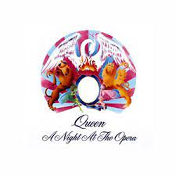
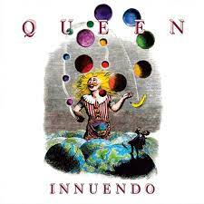
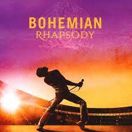

Músicas



Melhores músicas do Queen!!
28 álbuns, incluindo coletâneas e gravações ao vivo, marcam toda a trajetória da banda. Por isso, resolvemos organizar as 10 melhores canções em uma lista:
1. Who Wants To Live Forever
2. Killer Queen
3. Somebody To Love
4. We Will Rock You
5. We Are The Champions
6. Don’t Stop Me Now
7. I Want To Break Free
8. Love Of My Life
9. Under Pressure
10. Bohemian Rhapsody